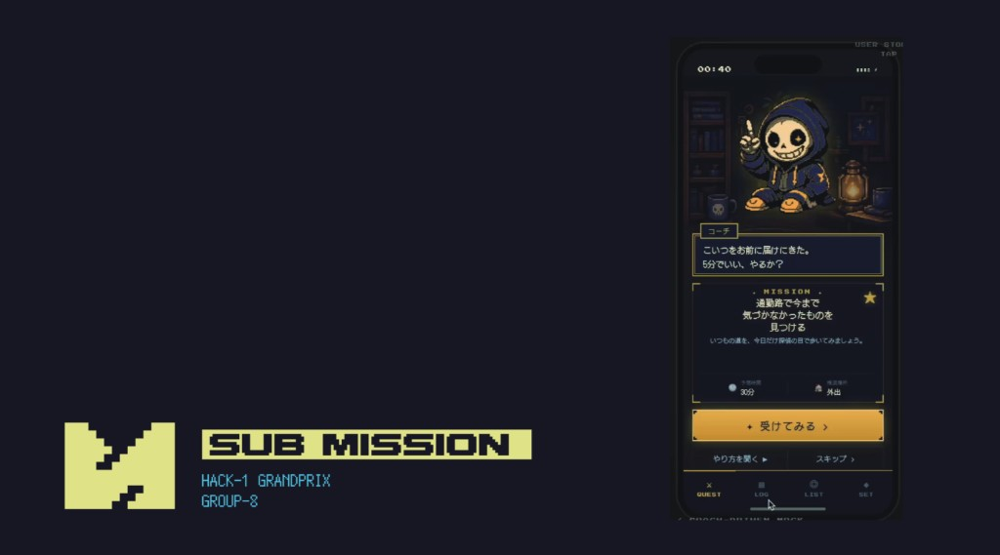

PROJECT
実施時期:
Hack-1 グランプリ2026
ハッカソンへの参加を通じた、プロダクト開発とソフトスキルについての振り返り。
参加のきっかけ：ソフトスキルの発掘
これまでロボコンやフリーランスの活動をしてきた。 その時々のシーンに適合したロボットや、デバイスを開発してきた。 今回は、もっと概念的な「プロダクト構想→チーム開発→公開」という一連の流れについてしっかり考えたいと思うようになった。
ロボットなどのハードウェア周りのスキルや、制御のコーディング（最近はほとんどAIコーディングだが）は身についてきた実感がある。 しかし、自身のソフトスキル（社会人基礎力的な何か）については、何が身についていて何が足りないのか、自分でもよくわかっていなかった。 ただエンジニア的なハードスキルではなく、自分の志向性や、才能といったものを何か見つけられないものかと考えたのだ。(もちろん、就活が近くなって焦ったのもある)
そこで、ロボットやデバイスからは離れて自分のスキルを発掘してみようと思い立ちハッカソンに出ることにした。 偶然にも、同じ時期に高校の同期がタッグを組んでハッカソンに参加する企てをしていたので、そこに混ぜてもらう形での参戦だ。
スケジュール
- 4/12：キックオフ（GMOインターネットグループ本社）
- 4/25：オンライン中間発表会（諸事情により私は不参加。ほかのメンバーに出てもらった）
- 5/10：プロダクト発表、展示
開発テーマ
キックオフイベントでは、このハッカソンのプロダクトテーマが発表された。 提示されたテーマは 「小さくなる日本」 である。
各々のチームがこのテーマについて1か月思考を重ね、各々のプロダクトを形にして発表に挑む。 小さくなる日本という暗喩的テーマにはよく頭を悩まされた。
テーマと開発プロダクト：『SUBMISSION』
私たちが作ったのは、義務や仕事とは別に「寄り道」を提供するアプリ「SUBMISSION」である。 ゲーム感覚で、普段はとらないような選択肢や冒険を達成しようというコンセプトだ。

結果
結果として、全体の優秀賞はもらえなかったものの、企業賞である「セガサミーイノベーション賞」を受賞することができた。 実のところ、本来的なエイムとはずれた理由で受賞していて、それは審査員からも言及はあったので素直には喜べないのだが。 結論としては 「ハッカソンのプロダクトとしては微妙だが、秀でるところもあった」 といったところなのだろうか。
公式レポート
主催・協賛企業であるGMOインターネットグループの開発者向けサイトに、当日の結果発表レポートが掲載されている。
Hack-1グランプリ2026 デモデーレポート（GMO Developers）
レポートによれば、グランプリはチームNo.14「YY」の「Kobolin」（起き上がりこぼしを使った遠隔コミュニケーション装置）、準グランプリはチームNo.03「TSUGITE」（技術継承をテーマにしたプロダクト）が受賞した。 私たちの「SUBMISSION」は、チームNo.13「なんとかする課」・チームNo.20「飯キャン界隈」とともにセガサミーイノベーション賞を受賞している。 審査員が「どのチームを選ぶべきか最後まで悩んだ」と語るほど、各チームが「小さくなる日本」というテーマに対して多様なアプローチを見せたイベントだった。
なぜ勝てなかったのか？
正直わからない。 「このプロダクトには負けた！」と思っていたチームより評価をもらい、「このプロダクトには勝っただろう」というチームに負けた。 しかし、このプロダクトが微妙である理由はいくつか思い当たる。 ある意味、審査員から展示の時間に言われた、
「意識高い人たちは好んで使いそうだけど、多くの人はめんどくさがってやらなそう」
という言葉がよく表している。 製作者側としての理論の裏付けや思惑はあるのだが、それがユーザー体験やユーザー心理というものにあまりにも寄り添えていないのだ。 だから、このアプリは「ただ高尚な目的を掲げているだけのアプリ」となっている。 ロボットと違い、「それを使って、受け入れてもらわなければいけない人々」がいる開発というものの難しさを思い知った1か月であった。